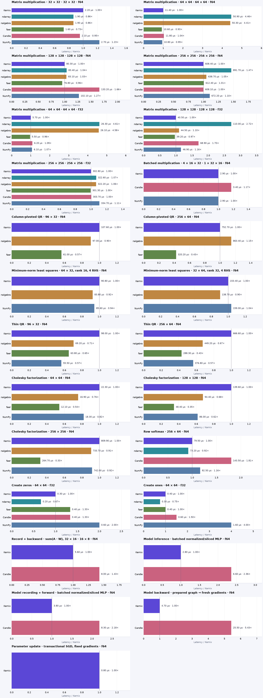

Kernix · performance evidence
Numerics, measured.
Kernix 0.9.0
AMD EPYC 9V74 80-Core Processor · one BLAS/Rayon thread · allocation-inclusive · warmed individual calls
At a glance
Microseconds per call · median · lower is faster. Shaded cells mark the lowest observed median.
No previous-version baseline is paired with this view.
Hover over a timing for its per-call p95. Expand a workload for p99 and nominal GEMM throughput (2n³ divided by allocating API latency). A missing cell means unmeasured, not unsupported.
The relative picture
Each workload uses its own scale. Library / Kernix median: below 1 means the comparator was faster.

One measured host and one BLAS/Rayon thread. CPU affinity was not pinned. Frequency and background load are uncontrolled; these observations establish no universal ranking. GEMM inputs are row-major; output layout and validation contracts may differ. Timings include output allocation and destruction.
Distributions & resources
256 individual warmed calls and 15 separate 10-ms batch means. Resource probes use a separate instrumented binary; NumPy native allocations are unavailable. Requested bytes include output and are not scratch-only memory or RSS. Native engines may retain thread-local packing memory; warmed probes exclude its first-use allocation and retention.
Matrix multiplication 32 × 32 · 32 × 32 · f64
Matrix multiplication 64 × 64 · 64 × 64 · f64
Matrix multiplication 128 × 128 · 128 × 128 · f64
Matrix multiplication 256 × 256 · 256 × 256 · f64
Matrix multiplication 64 × 64 · 64 × 64 · f32
Matrix multiplication 128 × 128 · 128 × 128 · f32
Matrix multiplication 256 × 256 · 256 × 256 · f32
Batched multiplication 4 × 16 × 32 · 1 × 32 × 16 · f64
Column-pivoted QR 96 × 32 · f64
Column-pivoted QR 256 × 64 · f64
Minimum-norm least squares 64 × 32, rank 16, 4 RHS · f64
Minimum-norm least squares 32 × 64, rank 32, 4 RHS · f64
Thin QR 96 × 32 · f64
Thin QR 256 × 64 · f64
Cholesky factorization 64 × 64 · f64
Cholesky factorization 128 × 128 · f64
Cholesky factorization 256 × 256 · f64
Row softmax 256 × 64 · f64
Create zeros 64 × 64 · f32
Create ones 64 × 64 · f32
Record + backward sum(A · W), 32 × 16 · 16 × 8 · f64
Model inference batched normalized/sliced MLP · f64
Model recording + forward batched normalized/sliced MLP · f64
Model backward prepared graph → fresh gradients · f64
Parameter update transactional SGD, fixed gradients · f64